0. Overview
This project takes a Western pop or rock song and re-renders it in an Israeli musical style, while keeping the original melody and chords recognizable. In music terms we change how the song sounds - its instruments and texture - without changing what is played. The system works on mel-spectrograms, a compact picture of sound that shows which frequencies are loud over time. A diffusion model - the same family of models behind AI image generators - learns to draw the styled spectrogram from two hints: a piano-roll of the notes to keep, and a style ID that says which style to paint on top. A neural vocoder called BigVGAN then turns that spectrogram back into audio you can play. The page below follows the pipeline left to right - preprocessing, training, then results - with something to hear or see at every stage.
Full pipeline block diagram

Download this diagram for the poster / book / slides: SVG (vector) · PNG
{kind=link}
{kind=link}
Legend: green = built by us · blue = open-source as-is · orange = adjusted open-source · purple = active model block · gray = data/artifacts
Specifications scoreboard
Specifications met: 3 of 4
| Specification | Target | Achieved | Status | Explanation |
|---|---|---|---|---|
| All-FAD (VGGish) - overall realism | <= 9.0 | 2.20 - 2.49 pooled (worst step 3.26) | MET | generated-vs-real Frechet distance on pretrained VGGish; ~4x under the bar |
| Group-FAD (VGGish) - version conditioning | <= 7.0 | 2.20 - 2.49 per version; cosine-sim 0.85 - 0.89 | MET | each style scored against its own held-out real audio; tight PCA/bell overlap confirms conditioning |
| Note+Instrument F1 - score fidelity | >= 30% | 3.1% - 4.5% (best 7.7% per song) | NOT MET | NOT MET numerically, and known from the start - the score itself comes from a NOISY Basic-Pitch transcription of full-mix audio (not ground-truth MIDI), so perfectly preserving it was never achievable; transfer also alters pitch/timbre and the +/-50 ms polyphonic match is strict. Used as a comparative tie-breaker |
| Latency / inference speed | <= 5 s per 5 s segment | 0.67 s (ddim100) / 1.01 s (ddim200) per segment; RTF 0.133 / 0.202 | MET | L4 GPU whole-song render; ~5-7x faster than real time |
Did we meet the specifications?
We set four measurable targets and met three of them. Realism (FAD, a distance between our audio and real songs in each style) is well inside target, so the output sounds like real music in that style. Speed is well under real-time: generating five seconds of audio takes under a second on a GPU. The one target we miss is note-level F1, our content-preservation score. That number is low mostly because of how it is measured - both the original and our output are transcribed by an imperfect automatic tool, so the comparison is noisy on both sides, and our score tracks pitch only. When we instead line the notes up visually (the piano-roll overlays), the melody and harmony clearly survive the transfer, which is also what you can hear in the examples.
1. Preprocessing
Before any learning can happen we have to build the dataset, because no Israeli-style dataset exists. Each song is downloaded, transcribed into notes (MIDI) by a tool called Basic-Pitch, and turned into two things: a piano-roll of the notes to keep and a mel-spectrogram of the sound, both sliced into 5-second pieces. The DSP panel for each song shows this signal chain step by step: resample the audio to 22.05 kHz, apply the mel filter-bank (which also acts as an 8 kHz low-pass), take the log so loud and soft parts sit on a similar scale, and normalize to a fixed range. For the demo songs you can hear the original, hear the transcribed score played back as sound (what the model is told to keep), and see the piano-roll, the mel and the full DSP pipeline.

Download this diagram for the poster / book / slides: SVG (vector) · PNG
{kind=link}
{kind=link}
What is a piano roll?
A piano roll is how musicians write notes on a computer - the digital version of sheet music, named after the punched paper rolls of old self-playing pianos. It is a simple chart: time runs left to right, each row is one piano key, and every bar means "this note starts here, lasts this long". Higher on the page = higher note. The demo below shows the piano roll of a melody everyone knows (Beethoven's Ode to Joy) while it plays - the red cursor and the lit-up bars show exactly what you are hearing. This chart is what our model receives as its "keep these notes" instruction for every song.
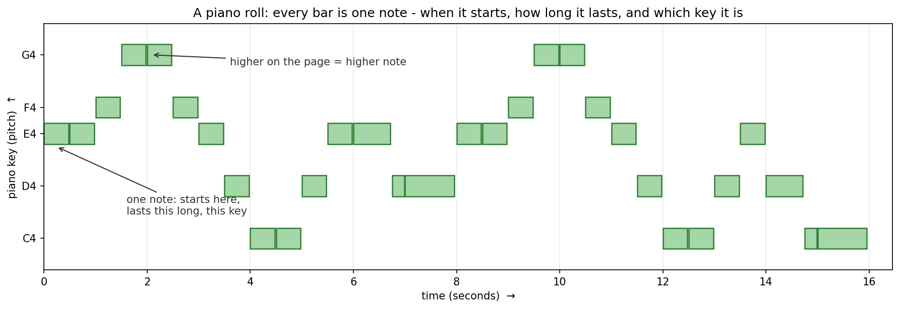
More examples of piano rolls in the wild: YouTube "falling notes" piano videos (the same chart, rotated vertically).
Rihanna - Diamonds (pop)
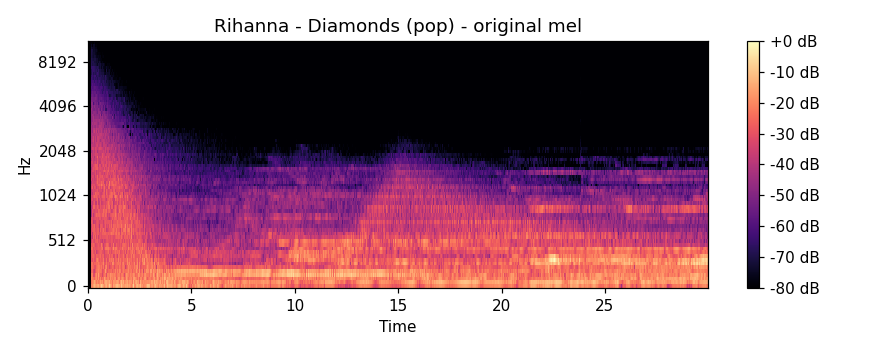
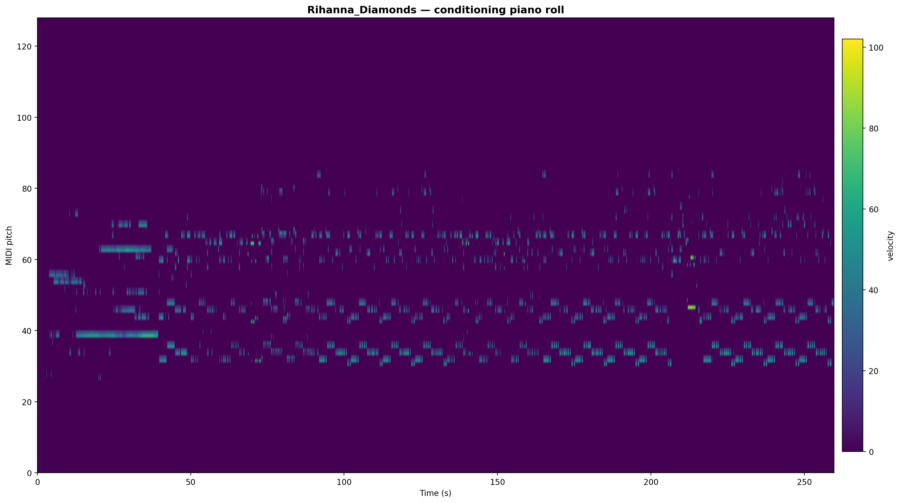
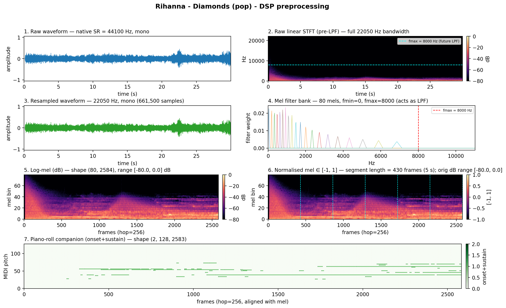
Noa Kirel - Unicorn (Israeli pop)
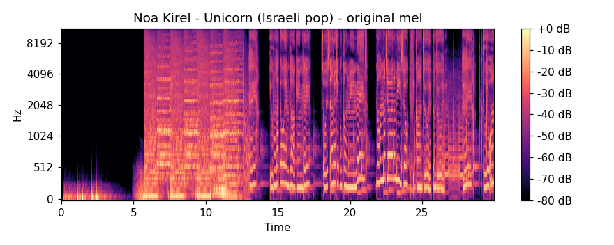
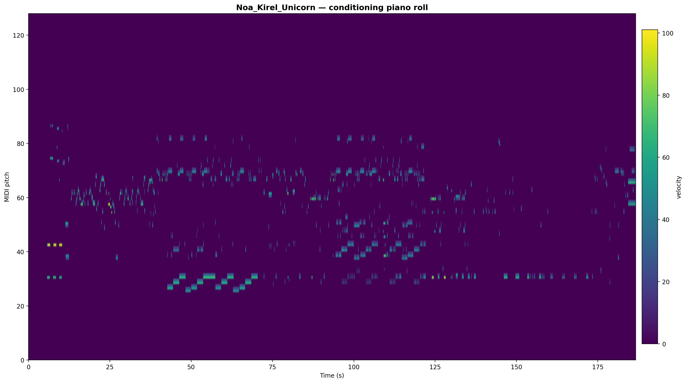
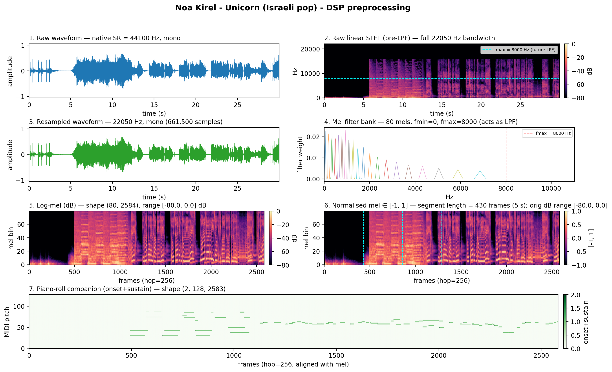
2. Training
We ran three training campaigns and kept improving the data, not the model. The network, the noise schedule and the way we feed in the score all stayed fixed; what changed was the music we trained on - from clean Western data to our own hand-built Israeli dataset. The loss curves stay stable across all three runs, which tells us that any drop in Israeli quality comes from the noisier data rather than the model design.

Download this diagram for the poster / book / slides: SVG (vector) · PNG
{kind=link}
{kind=link}
Full model architecture
The production model is a score-conditioned denoising diffusion U-Net (DDPM). It predicts the noise added to a 5 s mel segment, conditioned on a piano-roll score and a style/version ID. The detailed U-Net layer stack and the FiLM + classifier-free-guidance conditioning are covered in the project book.
Architecture & training decisions
| Component | Choice | Why |
|---|---|---|
| Backbone | 1-D U-Net, 4 levels, ~32 M params | Mel frames as 1-D sequences; strided conv is efficient over time |
| Channels | 160 -> 320 -> 480 -> 640 (mults 1,2,3,4) | Widen as time is downsampled 430 -> 215 -> 108 -> 54 |
| Attention | Self-attention at levels 1, 2, 3 + bottleneck | Long-range temporal structure where feature maps are small |
| Noise schedule | Cosine (Nichol & Dhariwal 2021), T=1000 | Avoids the harsh endpoints of a linear schedule |
| Sampler | DDIM, N=100 steps, eta=0 (deterministic) | ~10x faster than full 1000-step ancestral sampling |
| Loss | L1 on predicted noise | Smoother gradient landscape than L2 for mel targets |
| Conditioning | FiLM at every ResBlock (gamma, beta from C) | Injects score + version at all temporal scales |
| Guidance | Classifier-free, w_s = w_v = 1.25 (3 passes) | Independent control of score fidelity and style strength |
| Optim | AdamW, lr 1e-4 -> 1e-5, EMA 0.999, bf16, 250k steps | Stable long run; late checkpoints settle into the LR minimum |
| Output | 80-bin mel -> BigVGAN v2 vocoder @ 22 kHz | Same vocoder pipeline as the earlier models |
Why diffusion over DDSP / VAE-GAN?
- Handles POLYPHONIC music - several instruments sounding at once - which the simpler earlier approaches we tried could not.
- Score conditioning splits WHAT from HOW: the 2-channel piano roll (onset + sustain) says what notes to play, the version embedding says in which style (which artist / corpus) to play them.
- Mel-spectrogram in / mel-spectrogram out - it drops straight into the existing DSP + vocoder pipeline; only the middle block changed.
Input: noisy mel [80 x 430] + piano-roll [256 x 430] · Conditioning C = time_emb(128) + version_emb(128) = 256-d · Output: predicted noise [80 x 430]
Why train on a synthesized dataset first? Clean vs. noisy note labels

Download this diagram for the poster / book / slides: SVG (vector) · PNG
{kind=link}
{kind=link}
Data augmentation (training time)
Because the Israeli data is small, we stretch it during training only (never at test time), and each trick has a clear musical meaning. Pitch-shift moves the whole clip up or down by up to two semitones (a semitone is one piano key), so the model hears the same phrase in a slightly different key. Time-stretch speeds the clip up or slows it down by up to 10% without changing its pitch. SpecAugment hides a few random stripes of the spectrogram so the model cannot lean on any single frequency or moment. The pitch and tempo changes are applied to the mel and the note-roll together, so the notes always stay lined up with the sound. The clips below let you hear the original segment and each augmented copy.
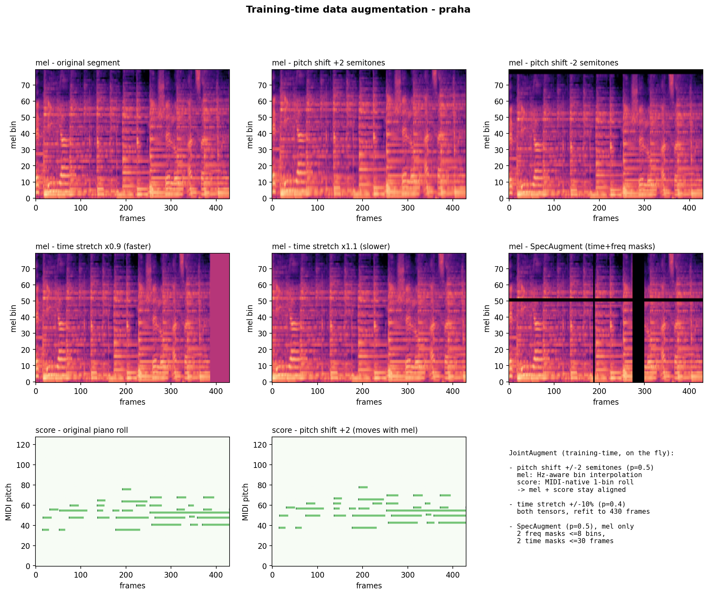
Hear the augmentation
These are the actual augmented WAVs generated for the source-pool song and fed into training (offline pitch/time policy). Play the original, then each augmented copy.
Training vs. validation loss (final 3-style run)
Before training we split the collected songs into two disjoint sets. About 90% become the training set: the model sees these segments over and over and adjusts its weights to reduce its error on them. The remaining songs form the validation set: the model never trains on them - at regular intervals we only measure the same error on them, without changing any weights. The split is done per song, not per 5-second segment; otherwise two slices of the same song could land on both sides, and the check would be meaningless.
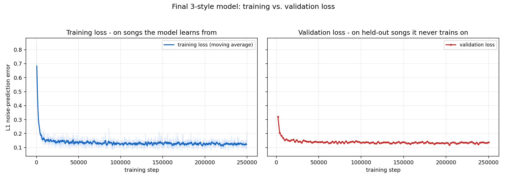
How to read the curves: the training loss (left) is the error on songs the model fits directly; the validation loss (right) is the honest test - the same error measured on songs the model has never heard. If the model were merely memorizing, the left curve would keep dropping while the right one flattened or rose. In our run the two settle at almost the same level (about 0.12), which tells us the model generalizes to unseen songs instead of memorizing - but also that after ~100k steps the loss alone can no longer distinguish the late checkpoints. That is why the final checkpoints (210k-250k) were chosen by listening tests and by the FAD / F1 metrics, not by the loss value.
1. Synthesized Western dataset only (clean note labels - architecture sanity)
A first run on a large synthesized Western multi-track dataset that comes with exact, aligned note labels. This was a sanity check: if the model cannot learn on clean data, it has no chance on our messier Israeli material. It passed, so this run stayed in the final model as the Western-rock reference style.
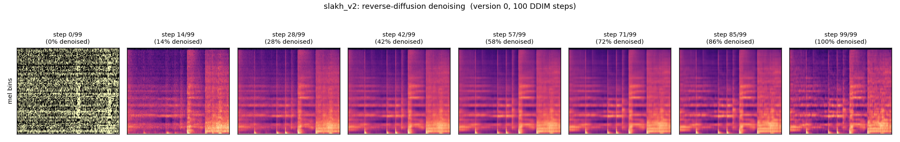
2. + Shalom Hanoch / Arik Einstein (first Israeli style)
Our first Israeli run: the Western baseline plus two singer-songwriter styles (Shalom Hanoch and Arik Einstein). Here the note labels come from an automatic transcription of full recordings, so they are noisier - this run showed the model could still learn a real Israeli style from imperfect data.
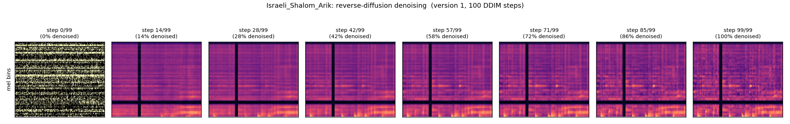
3. Final 3-style model (Western rock + Israeli Artists + Israeli Military)
The final model, trained on all three styles at once - Western rock, a blend of Israeli artists, and Israeli military-band songs. One model holds all three and we pick the style at generation time. This is the model evaluated and demoed below.
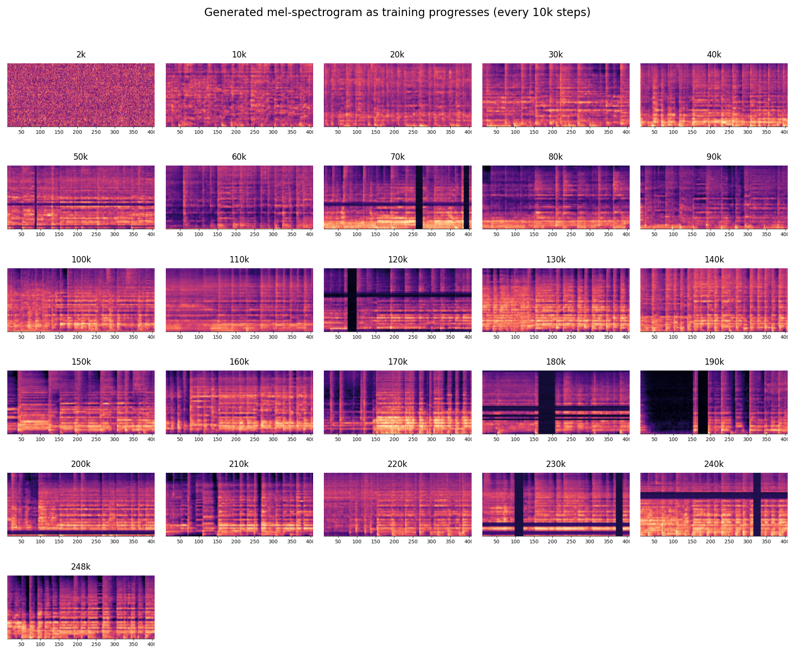
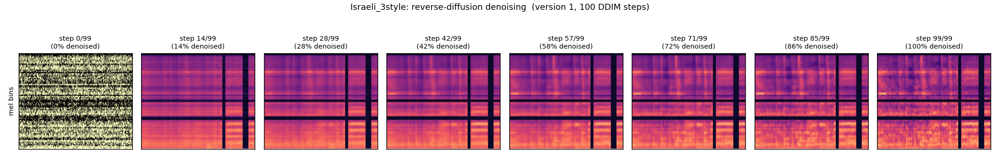
3. Postprocessing & evaluation
The generated mel is vocoded to audio with BigVGAN, then scored with FAD (realism), note-level F1 (score fidelity) and latency (real-time factor).

Download this diagram for the poster / book / slides: SVG (vector) · PNG
{kind=link}
{kind=link}
Dataset purity (is each style one coherent sound?)
Before judging the model we check the data itself: were the songs we collected for each style really one coherent "version"? We measure every song against the rest of its own dataset with the same embedding distance used for FAD (leave-one-song-out). Result: every single song in both Israeli datasets sits below FAD 5 - the near-indistinguishable band - with medians around 1.2, so both collections are sonically coherent. A handful of songs are statistical outliers within their dataset (still below 5), which matches what we hear: a few recordings with different production. The two Israeli datasets are also close to each other (pooled distance 0.29), which explains why their two styles can sound related.
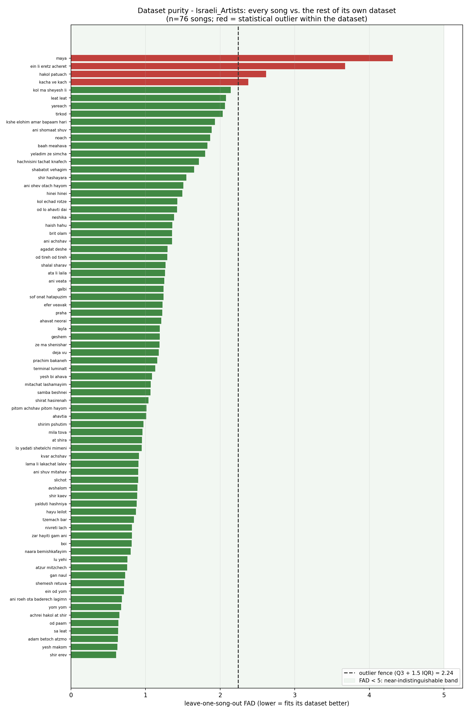
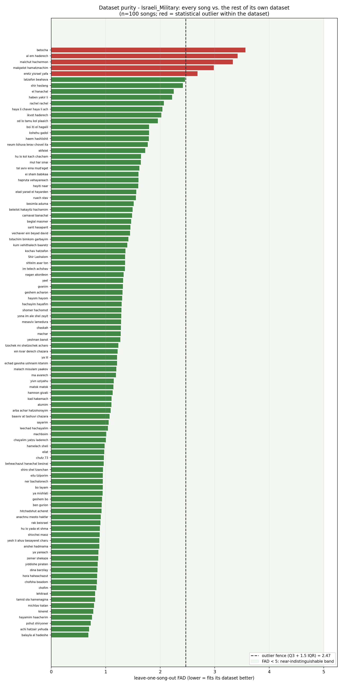
Frechet Audio Distance (realism)
Frechet Audio Distance (FAD) measures how close our generated audio is to real songs in the same style - lower is better. Across the finalist checkpoints it sits around 2.2-2.5, far under our target of 9, so the output lands close to real music in each style. Shown here: one PCA scatter per style (the best checkpoint of each) and the per-style overlay of all finalists.
How the FAD test actually works (from audio to one number)
Step 1 - from sound to numbers. A pre-trained network called VGGish listens to every 0.96-second window of audio and summarizes it as a list of 128 numbers (an "embedding") that captures how that moment sounds - texture, instruments, brightness. A folder of audio therefore becomes a cloud of points in a 128-dimensional space, where similar-sounding moments land near each other.
Step 2 - compare the two clouds. We take the cloud of real songs in a style and the cloud of our generated audio for that style, fit a Gaussian to each (its center μ and spread Σ), and compute the Fréchet distance between the two Gaussians. That distance is the FAD score: 0 means identical distributions, and lower means the generated audio is statistically closer to the real style. Our scores of about 2.2-2.5 are far under the target of 9.
Step 3 - how the pictures show it (128-D → 2-D → 1-D). A 128-dimensional cloud cannot be drawn, so we flatten it in two honest ways. The PCA scatter keeps the two directions along which the points vary the most and drops the rest - good for seeing the two clouds and their overlap. The bell curves go further: every point is projected onto a single line - the line connecting the real cloud's center to the generated cloud's center. This is the one direction along which the two clouds differ the most, so it is the most pessimistic possible 1-D view; each cloud then becomes an ordinary bell curve. If even these bells overlap heavily, the two distributions are genuinely close. In every figure the printed FAD value is computed in the full 128-D space - the pictures are only there to make it visible.
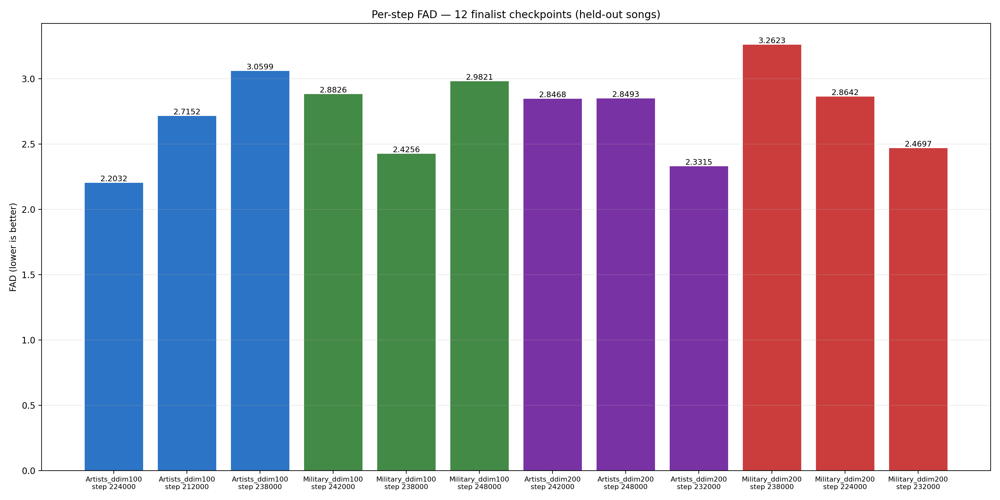
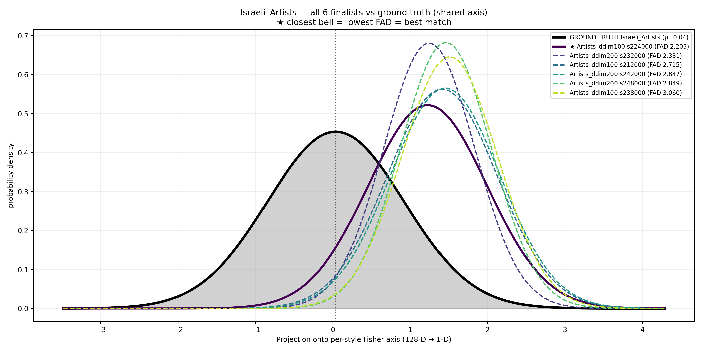
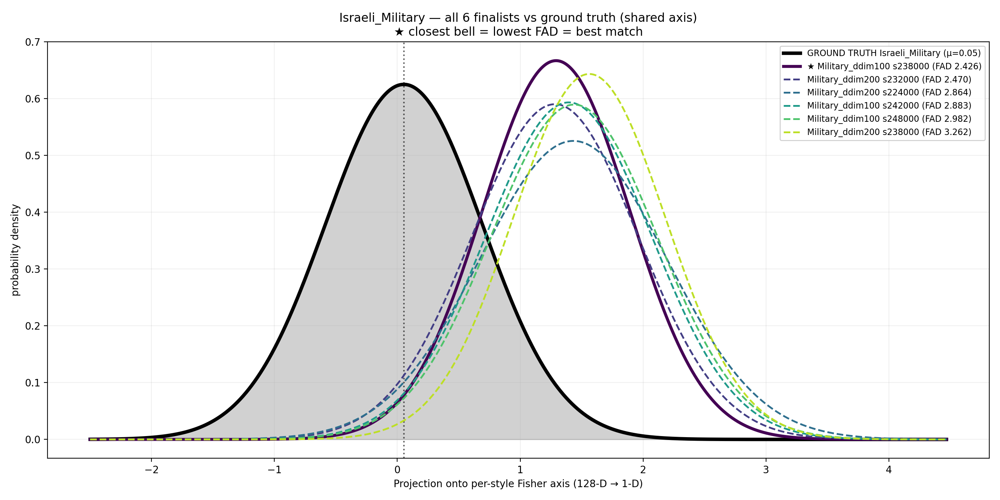
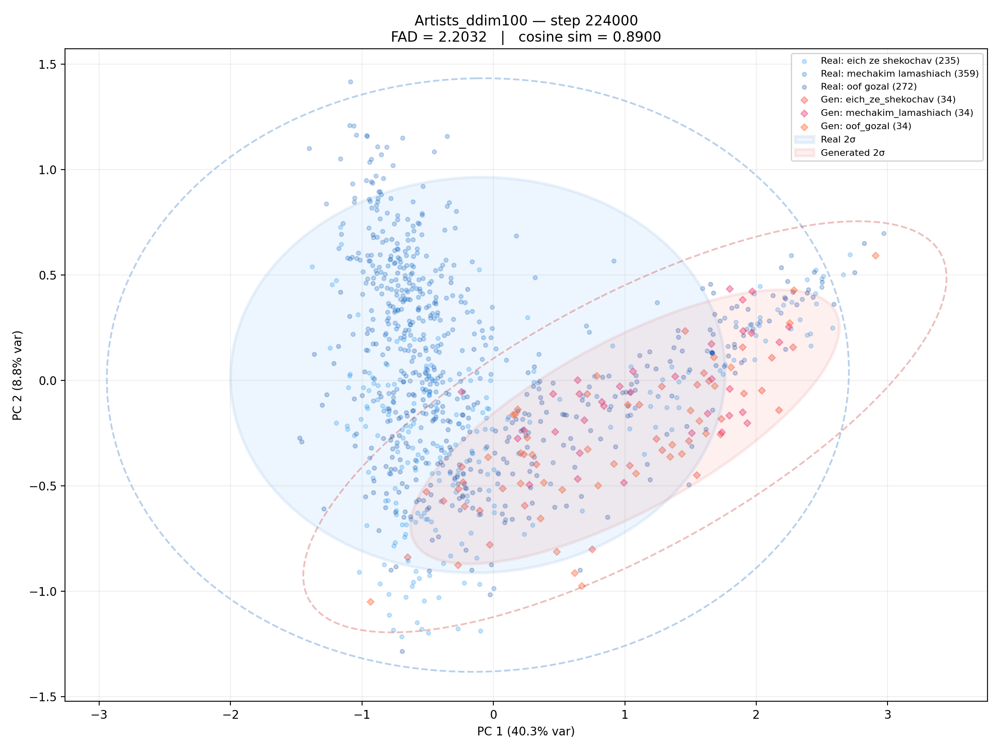
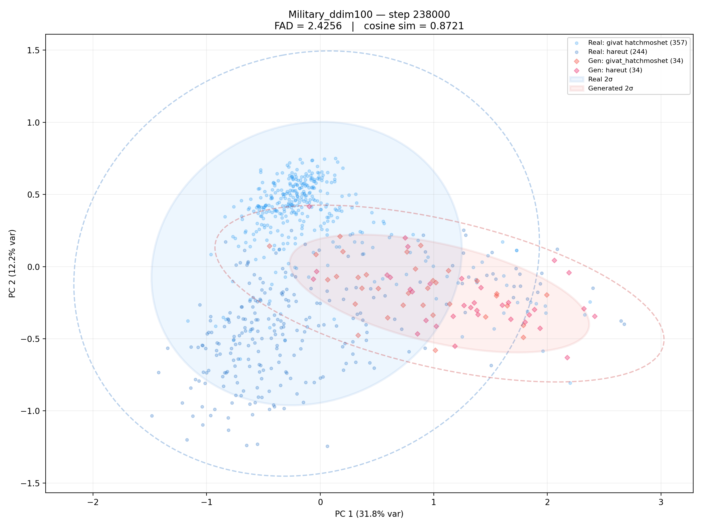
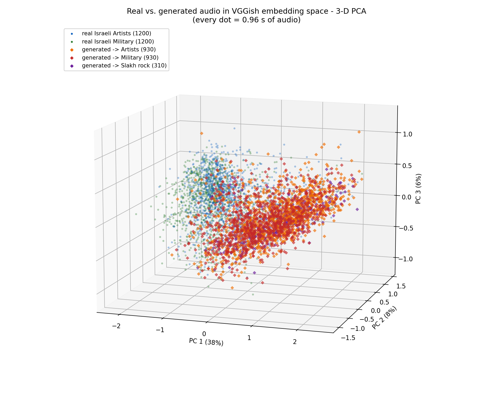
Note-level F1 (score fidelity)
Note-level F1 checks how many of the original notes survive the transfer. It reads low (about 3-4.5%) mainly because it compares two automatic transcriptions, both noisy, and our score tracks pitch only. We use it as a tie-breaker between checkpoints; the piano-roll overlays are the more honest view of how well the melody is kept. Shown here: one overlay per style on a held-out song.
How to read the note-preservation (F1) figures
F1 asks: did the notes of the original song survive the style transfer? We transcribe the original and the generated audio with the same automatic tool (Basic-Pitch), then match notes one-to-one - a match means same pitch and an onset within 50 ms. Precision = how many of our generated notes are real; recall = how many of the real notes we kept; F1 combines both. Because both sides pass through an imperfect transcriber (and our score tracks pitch only, not instruments), the absolute numbers come out low (3-4.5%) even when the melody is clearly preserved by ear - so we use F1 only to compare checkpoints, and the piano-roll overlay figures as the honest visual check.
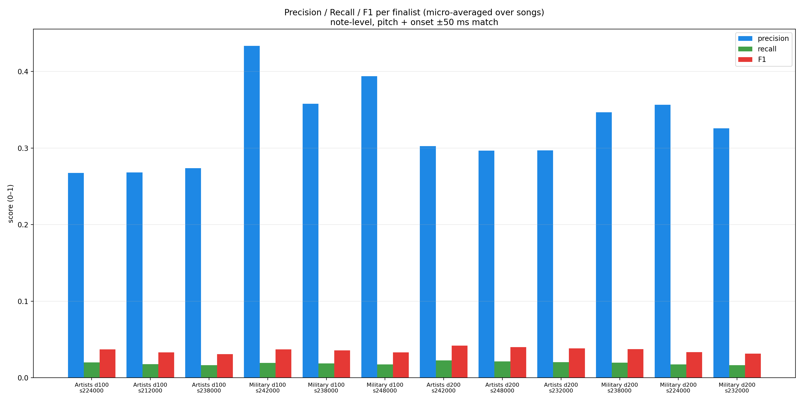
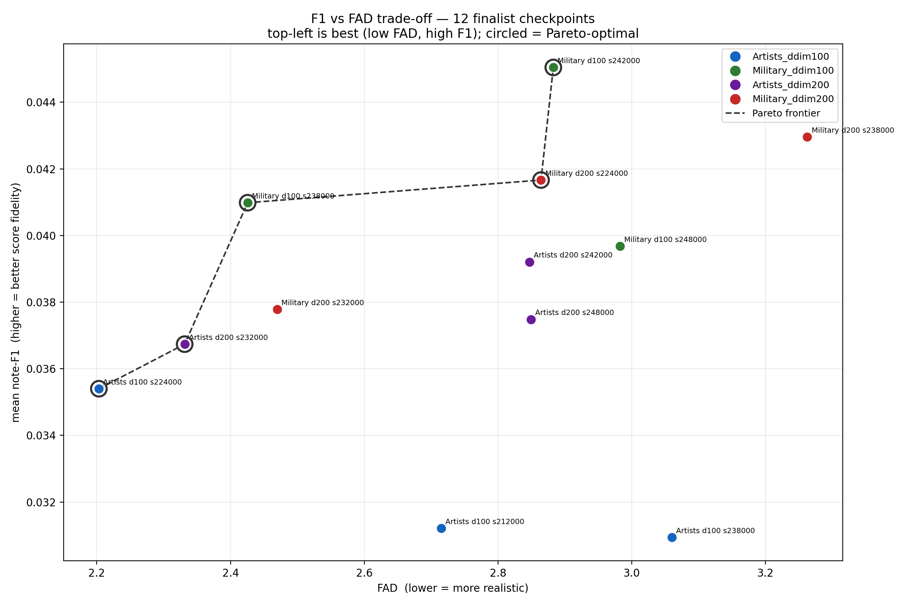
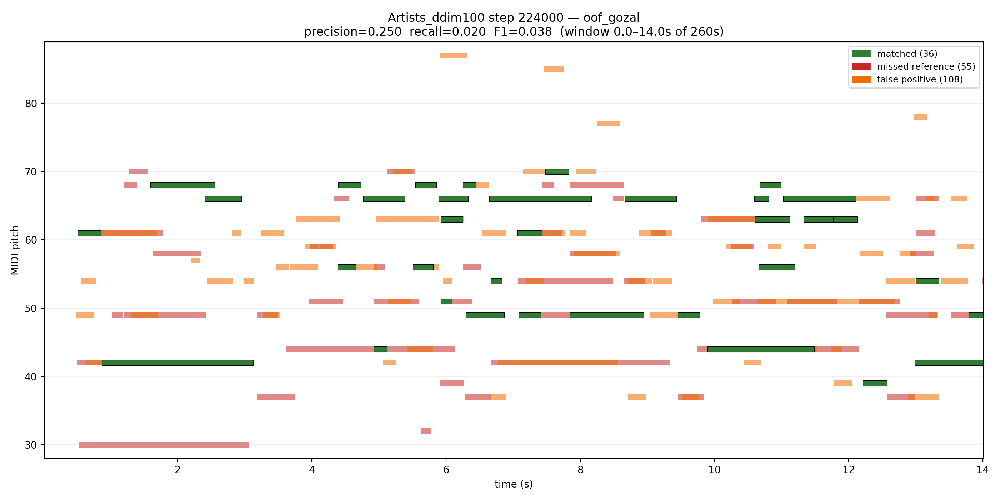
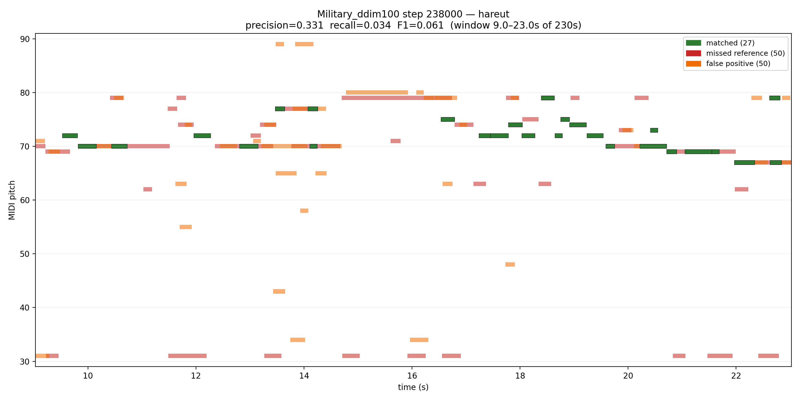
Latency / real-time factor
How fast generation runs, as a real-time factor (RTF = seconds of compute per second of audio; below 1 is faster than real-time). We measure about 0.13 at 100 sampling steps and 0.20 at 200 - roughly 5-7x faster than real-time on the GPU.
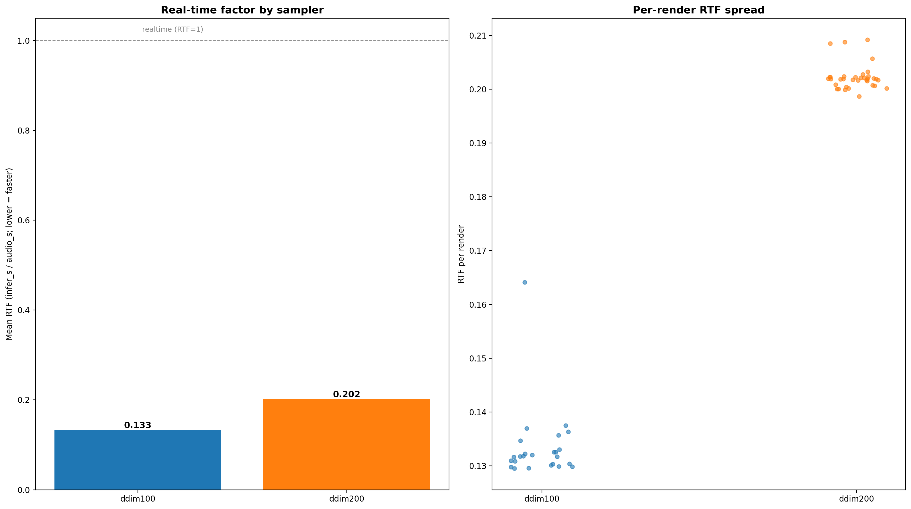
4. Inference results (style transfer)
For five songs chosen from outside the training styles, listen to the original and then the same short window re-rendered in each learned style. The notes stay fixed while the model repaints the sound. Every clip is the exact segment we picked by ear for the clearest comparison. The original is presented at the same 22.05 kHz mono the preprocessing uses — the fidelity ceiling the model works within — so the only audible difference you judge is the style, not the recording quality.
Eminem - Lose Yourself (rap)
Original (source song, 22.05 kHz mono)
Transferred versions (6) — the same 00:53-01:08 window as the original, across styles, samplers and checkpoints:
Ravid Plotnik - New Day (Israeli hip-hop)
Original (source song, 22.05 kHz mono)
Transferred versions (6) — the same 00:55-01:10 window as the original, across styles, samplers and checkpoints:
5. Where the model struggles
We show the weak cases on purpose. Two things go wrong. First, when the source is far from anything in our small training set — heavy metal like Metallica — the model has little to lean on, so the output is noisy and only loosely follows the song. Second, on some checkpoints you can hear the joins between the 5-second segments, or a machine-like buzz, when the generated mel is blurry and the vocoder has to fill in. These are the honest limits of training on only a few hours of hand-collected audio.